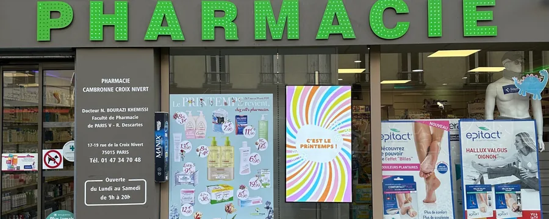

Écran d'information pour cabinets médicaux, dentaires et paramédicaux
Une salle d'attente, c'est une audience captive de quinze minutes qui n'a rien à lire d'autre qu'un magazine de 2019. Et un secrétariat qui répond vingt fois par jour aux mêmes quatre questions.

Les quatre questions que votre secrétariat répète toute la journée
Les horaires. La façon de prendre rendez-vous. Ce qu'il faut apporter. Ce qu'on fait en cas d'urgence quand le cabinet est fermé. Ces quatre questions occupent une part considérable du temps d'un secrétariat, au téléphone comme au guichet, et interrompent systématiquement le travail en cours.
Affichées en boucle, lisiblement, dans la pièce où les gens attendent, elles cessent d'être posées. C'est un gain de temps réel, mesurable au bout d'un mois, et c'est la raison la plus fréquente pour laquelle un cabinet s'équipe.
Ce que le cadre autorise depuis 2020
Beaucoup de praticiens croient encore que toute communication leur est interdite. Ce n'est plus le cas depuis les décrets du 22 décembre 2020 : l'interdiction générale et absolue de publicité a été remplacée par une communication autorisée, destinée à éclairer le choix du patient — compétences et pratiques professionnelles, parcours, conditions d'exercice.
Le cadre reste exigeant. La communication doit être loyale et honnête. Elle ne peut pas s'appuyer sur des témoignages de tiers, comparer avec des confrères, ni inciter à un recours inutile aux soins.
Nous travaillons dans ce cadre et nous vous soumettons la première boucle avant diffusion. Pour tout point qui vous semble limite, votre ordre professionnel est la référence : nous ne donnons pas de conseil déontologique et nous ne nous substituons pas à lui.
Ce qui a sa place sur l'écran
- Horaires, jours de fermeture, congés annoncés à l'avance
- Les praticiens du cabinet, leurs spécialités et leurs jours de présence
- Les modalités de prise de rendez-vous, avec le QR code vers la plateforme
- La conduite à tenir en dehors des heures d'ouverture, et les numéros d'urgence
- Moyens de paiement, tiers payant, pièces à apporter
- Les campagnes de santé publique et les rappels de prévention de saison
- L'arrivée d'un nouveau praticien ou d'un nouvel équipement
- Les consignes pratiques : sonnette, accessibilité, stationnement
Ce qui n'y a pas sa place : les données de santé, les noms de patients, et tout ce qui ressemblerait à une offre commerciale. Une salle d'attente n'est pas une vitrine.
La prévention de saison, dans ce département
Un cabinet du 66 voit revenir les mêmes sujets aux mêmes moments : les fortes chaleurs et l'hydratation des personnes âgées en été, l'exposition solaire sur le littoral, les campagnes de vaccination de l'automne, les gestes barrières en période épidémique, les allergies polliniques du printemps.
Ces séquences se programment une fois, en début d'année, et se déclenchent aux bonnes dates. Le matériel officiel des campagnes nationales s'intègre directement dans la boucle.
La maison de santé et le cabinet de groupe
Plus il y a de praticiens, plus l'écran devient utile — et c'est la configuration qui se développe le plus vite dans le département. Un patient qui entre dans une maison de santé ne sait pas toujours à quel étage aller, qui consulte aujourd'hui, ni où se trouve le laboratoire.
Un écran à l'accueil traite exactement cela, et un second dans la salle d'attente prend le relais. Plusieurs écrans se pilotent depuis le même compte, avec des contenus communs et des contenus propres à chaque praticien.
Une information visible depuis la rue
C'est le second équipement, souvent installé après coup. Un cabinet fermé le mercredi, un cabinet qui déménage, un cabinet qui accueille un nouveau praticien : ce sont des informations que les patients cherchent depuis le trottoir, souvent devant une porte close.
Un petit écran en vitrine, lisible de l'extérieur, évite les appels et les déplacements inutiles. Il doit rester sobre : dans ce métier, une vitrine trop démonstrative dessert plus qu'elle ne sert.
Le budget
Écran intérieur pour salle d'attente : à partir de 49 € HT par mois en 32 pouces sur 60 mois, 79 € en 49 pouces. Écran haute luminosité pour une information lisible depuis la rue derrière une vitre : 139 € HT par mois. Matériel, logiciel, première boucle de dix visuels, installation, formation du secrétariat et SAV compris. La mise à jour se fait ensuite depuis un ordinateur ou un téléphone, en quelques minutes.
Les questions propres aux professions de santé
Un professionnel de santé a-t-il le droit de communiquer ?
Oui, depuis les décrets du 22 décembre 2020 — n° 2020-1662 pour les médecins, n° 2020-1658 pour les chirurgiens-dentistes. L'interdiction générale et absolue de publicité a été remplacée par une communication autorisée, à condition qu'elle soit loyale, honnête, et qu'elle ne repose ni sur des témoignages de tiers, ni sur la comparaison avec des confrères, ni sur l'incitation à des soins non nécessaires. Votre ordre reste votre référence, et c'est à lui qu'il faut poser la question limite, pas à nous.
Concrètement, qu'est-ce qu'on affiche en salle d'attente ?
L'essentiel de ce que vous répétez à l'oral toute la journée : horaires et jours de fermeture, praticiens et spécialités, modalités de prise de rendez-vous, conduite à tenir en cas d'urgence, moyens de paiement, tiers payant. S'y ajoutent les campagnes de santé publique et les rappels de prévention de saison.
Cela ne va-t-il pas faire commercial dans une salle d'attente ?
Cela dépend entièrement de ce qu'on y met, et c'est la raison pour laquelle nous montons la première boucle avec vous. Une salle d'attente qui affiche des offres ressemble à un commerce ; une salle d'attente qui affiche des informations pratiques et de la prévention fait son travail. Le ton, sobre et lisible, se décide au départ.
Et la protection des données des patients ?
L'écran ne diffuse aucune donnée de santé et n'affiche jamais de nom de patient. C'est un support d'information général, sans lien avec votre logiciel de dossiers. Un appel de patients par nom ou numéro relève d'un dispositif différent, avec ses propres contraintes, et nous n'en proposons pas.
À voir aussi
Les métiers voisins et les secteurs concernés.
Nous venons voir la salle d'attente
Déplacement, repérage et devis gratuits. La première boucle se construit avec vous avant toute installation.
Demandez votre étude gratuite
Indiquez-nous le nombre de praticiens, la taille de la salle d'attente et si vous souhaitez aussi une information visible depuis la rue.
- Réponse sous 48 heures
- Nous venons voir votre devanture sur place
- Simulation de votre vitrine, sans engagement